CCAR-P · prerequisite crash course · one clean pass, small to big
PREREQUISITE: CLAUDE DEVELOPER FUNDAMENTALS
This volume covers the Claude API for a CCAR-P candidate. It explains what Claude is. It covers keys, Messages, and system prompts. It also covers multi-turn, sampling, and tool use.
The volume includes thinking, caching, batches, and embeddings. It shows the model lineup, MCP, and Claude Code. It also covers streaming, rate limits, errors, and evals. The volume includes safety and prompt engineering. A capstone section connects all these parts into one production application.
22 units · zero repetition · visual ladders6 internet diagrams · 3 transcript-vetted videos · Python throughout
HOW TO USE THIS VOLUME
Read it once, front to back. Every topic is a visual ladder. Rung 1 gives you the plainest possible mental model in one short paragraph. Each rung then adds exactly one layer of depth, until the full production-grade picture stands. A diagram sits at every rung, so you watch the concept grow.
Each unit ends with a knowledge check. Answer the knowledge check from memory. Do not look at the answers before you complete the knowledge check. Use short sentences and plain words.
Use real API shapes only. All code is Python code. The code uses the Anthropic SDK. Each line that can confuse you has a comment.
A note on honesty, before we start
CCAR-P has no formal prerequisites. The exam guide (v1.0, July 2026) recommends a software-engineering foundation. It recommends about three years of systems architecture experience. It recommends six months of hands-on production work with Claude.
This volume covers the Claude part of that list. It covers the developer fundamentals that the exam assumes you know. This volume does not teach software engineering or systems architecture. If these subjects are new to you, use this volume with real project work. Then, you can take the exam.
If you finish the AI Practitioner material, the AWS part of your brain is active. This volume activates the Claude part. Your Claude experience is now experimental. By the end of this volume, your experience will be architectural.
You will know what each control does. You will know the cost of each control. You will know when to adjust each control.
Next: Claude is a system that makes predictions over tokens. This is the one idea that all other ideas depend on.
WHAT CLAUDE IS: PREDICTIONS OVER TOKENS
Rung 1: the plainest version. Claude is a large language model. It does one task. Given text, it predicts the most probable next token.
Then it predicts the next token. It continues until it decides to stop. A token is a piece of text. It can be a word, part of a word, or punctuation.
"Unbelievable" has three tokens: un, believ, able. About four characters make one token.
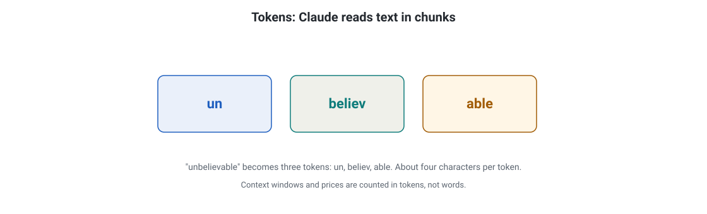
Tokens: Claude reads text in chunks of about four characters. 'Unbelievable' becomes three tokens: un, believ, able.
How to read this diagram
Read the three boxes left to right: un, believ, able.
Together they spell 'unbelievable'.
Context windows and prices count tokens, not words.
What breaks if a part fails: If you budget in words, a long document overflows the context window you thought you had.
Figure 0.1. Tokens are the atoms. Claude reads and writes text in chunks of approximately four characters. Claude does not read or write text in words.
Rung 2: tokens in, tokens out. Everything you send becomes one long sequence of input tokens: your instructions, the conversation so far, the documents, and the tool definitions. Claude reads the whole sequence. It predicts the next token, appends it, and repeats.
The finished text is the output tokens. There is no other input channel and no other output channel. Tokens are the whole interface.
Figure 0.2. This shows how Claude reads a request. Everything you send becomes one token sequence. Claude writes the answer one token at a time. There is no other input channel.
Rung 3: the three numbers that run this volume. The context window is how many tokens fit in one request. This is 200K to 1M tokens on current models. max_tokens is your limit on the reply length, in tokens. Price is the cost per token in and per token out.
Output costs about 5 times more than input. Every knob in this volume helps you get more quality per token. Or, it helps you get fewer tokens per task. Sampling shapes which token Claude picks.
Caching reuses tokens that you already paid to process. Batching halves the token price. Tier choice picks the cheapest model with good enough tokens.
What is a token, and what does Claude do with them?
A token is a chunk of text (a word, part of a word, or punctuation; roughly four characters). Claude reads a sequence of input tokens and predicts the next token, over and over, until the answer is complete. Tokens are also the billing unit: you pay per token in and per token out.
Next: Your API key is the front door: the credential every call needs.
Your API key is the front door
Why this comes next.
You know what Claude is. Claude makes predictions over tokens. You need an API key before you can ask for a single prediction. The API key is the front door.
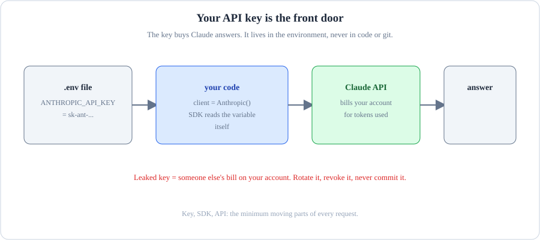
This is the API key flow. The key is in the header. The gateway checks the key. The request runs.
How to read this diagram
Your code sends a request. The key is in the x-api-key header.
The gateway checks the key first. If the key is wrong, the request does not run.
A valid key opens the door. The request runs. The response comes back.
The key is a secret. Do not put the key in code. Do not put the key in repositories. Do not put the key in chat.
What breaks if a part fails: If the key leaks into a repository, anyone who has the key spends your money. You must rotate the key.
Rung 1: the plainest version. Your API key is a password. The password buys Claude answers. You show the key with every request. Anthropic bills your account for the data you use.
You ---(API key + question)---> Claude API ---(answer)---> You
|
bills your account
Rung 2: where the key lives. The key looks like sk-ant-.... It is in an environment variable. It is never in code. It is never in git. The SDK picks up the key by itself.
.env file --> ANTHROPIC_API_KEY=sk-ant-...
|
your code: client = Anthropic() <-------+
| (SDK reads the variable itself)
v
request header: x-api-key: sk-ant-...
import os
from anthropic import Anthropic
# The SDK reads ANTHROPIC_API_KEY from the environment automatically.
# Put the key in a .env file or your shell profile, never in source code.
client = Anthropic()
Rung 3: the full picture. A leaked key lets anyone spend your money. Rotate it at console.anthropic.com the moment you suspect exposure. Some enterprise teams skip the direct API entirely.
They call Claude through AWS Bedrock or Google Vertex AI with IAM roles instead of an Anthropic key. The request shape is the same. The front door is different. The exam cares that you know both paths exist.
Path A (direct): you -- API key --> console.anthropic.com --> Claude
Path B (enterprise): you -- IAM role --> AWS Bedrock / Vertex AI --> Claude
Where does your API key live, and why?
In an environment variable (ANTHROPIC_API_KEY), loaded by the SDK. Never in source code or git, because a leaked key lets anyone bill your account.
Your API key is the front door. Next: Make your first API call. Use the Messages API. All other functions build on this endpoint.
Your first API call: the Messages API
Why this comes next.
You hold the key. Make the first call. Use the Messages API. This is the one endpoint that everything else in this volume builds on.
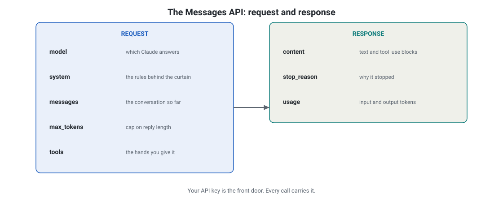
The Messages API: the request carries model, system, messages, max_tokens, and tools. The response returns content, stop_reason, and usage.
How to read this diagram
Left card: the five request fields and what each one does.
The arrow is the API call.
Right card: the three response fields.
Your API key is the front door. Every call carries it.
What breaks if a part fails: If max_tokens is too small, the answer cuts off mid-thought and stop_reason tells you why.
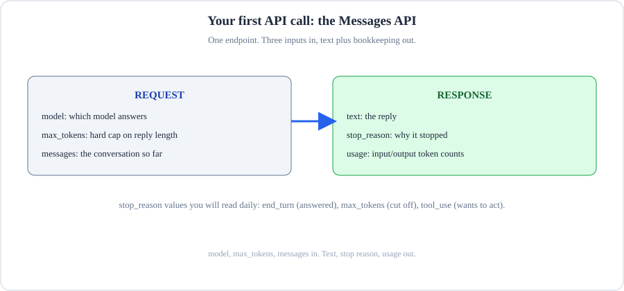
Your first API call includes the model, the maximum number of tokens, and a messages array. The messages array carries the user turn.
How to read this diagram
The model names the engine. The max_tokens caps the reply length. The messages carries the conversation.
The user role holds your turn. The assistant role holds the reply.
The response comes back as JSON. It includes the text and the usage counts.
What breaks if a part fails: If the max_tokens value is too small, the reply is cut off. The stop reason says max_tokens.
You send a request with three items. These items are the model, the maximum reply length, and your messages. You receive the reply text, the stop reason, and the token cost. Rung 1: the plainest version.
message = client.messages.create(
model="claude-sonnet-5", # which model answers; family ids track the latest snapshot
max_tokens=1024, # required: a hard cap on the reply length in tokens
messages=[
{"role": "user", "content": "Explain prompt caching in one sentence."}
],
)
print(message.content[0].text) # the reply text lives in the first content block
print(message.stop_reason) # "end_turn" means Claude finished normally
print(message.usage.input_tokens, message.usage.output_tokens)
The API is stateless. It remembers nothing between calls. Each request stands alone. Messages alternate user, assistant, user, assistant.
The system merges two same-role messages in a row. It does not reject them. Do not rely on this function. There is no system role.
System instructions are a top-level parameter. The next unit covers this parameter. Use the prefill trick. If the last message has role assistant, Claude continues writing from that text.
Claude does not start fresh. This helps you steer exact formats like JSON. Rung 2: the four rules of the road.
messages = [
{"role": "user", "content": "Summarize:"}, \
{"role": "assistant", "content": "Sure:"}, } alternating turns
{"role": "user", "content": "the report"}, /
{"role": "assistant", "content": "{"}, <-- prefill: Claude completes the JSON
]
system = ... <-- top-level parameter, NOT a message
Rung 3: reading the response like a production engineer.content is a list of blocks. The blocks are text, tool_use, and thinking. stop_reason tells you why the process stopped. end_turn means the process finished. max_tokens means the process hit your cap. The answer may be cut. tool_use means the process wants to call a tool. This tool is for the next units. stop_sequence means the process hit your custom stop string. usage carries the token counts.
You need the token counts for cost tracking. The API accepts up to 100,000 messages per request. You will not hit that limit. You manage the context yourself.
stop_reason = "end_turn" --> done, use the text
stop_reason = "max_tokens" --> answer may be truncated, raise the cap or chunk the task
stop_reason = "tool_use" --> run the tool loop (see the tool-use unit)
stop_reason = "stop_sequence" --> Claude stopped at your custom marker, as designed
Speed:
[Your first API call: the Messages API] Watch: freeCodeCamp's "Learn Claude AI" explains how to get a key. It shows how to make first calls. It covers prompt engineering basics. It also covers error handling with real code. Note: The video was filmed in 2024. The model names it mentions, like Claude 3.5 Sonnet, are old. But the API mechanics are still current. The transcript was checked in September 2026.
Which three parameters does every messages.create call require?
model, max_tokens, and messages. Everything else (system, tools, temperature, caching) is optional.
System prompts are the rules behind the curtain. Next:
System prompts: the rules behind the curtain
Why this comes next.
You can send messages. Each message restates the rules from scratch. This happens unless the rules are permanent. The system prompt is the permanent place for the rules.
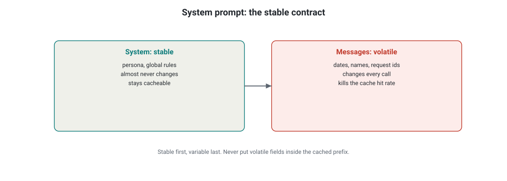
System prompt: keep the stable contract in system so its prefix stays cacheable. Put volatile data (dates, names, request ids) in messages.
How to read this diagram
Left card: system holds persona and global rules. It almost never changes.
Right card: messages hold per-request data. It changes every call.
Volatile content in system changes the prefix on every call and silently kills the cache hit rate.
What breaks if a part fails: If per-request data lands in the system prompt, the cache never hits. You pay full price on every call.
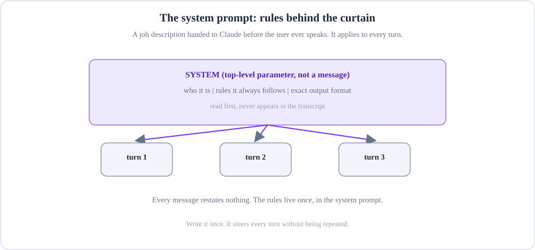
System prompts are the rules behind the curtain. There are three layers of instruction: system, developer, and user. Each layer overrides the layer below it.
How to read this diagram
The SYSTEM sets the role and the rules. These rules do not change. This is the curtain behind everything.
The DEVELOPER adds application-level instructions. These instructions show the purpose of this deployment.
The USER carries the actual request. Higher layers win when instructions conflict.
What breaks if a part fails: If user input can override system rules, a prompt injection is a polite request away.
Rung 1: the plainest version. A system prompt is the job description for Claude. You give it to Claude before the user speaks. It tells Claude its role, the rules it must follow, and the exact output format.
message = client.messages.create(
model="claude-sonnet-5",
max_tokens=1024,
# Top-level system parameter. Not a message, so it never appears
# in the user/assistant turn sequence.
system="You are a release-notes writer. One bullet per change. No adjectives.",
messages=[
{"role": "user", "content": "v2.4: fixed retry backoff, added SSO login"}
],
)
Rung 2: two shapes, two kinds of content. A plain string works for simple instructions. A list of blocks permits per-block controls, like prompt caching. You will see cache_control on a system block in the caching unit.
Content splits into two types. The stable contract (persona, rules, format) belongs in the system. Anything that changes per request (dates, user names, request IDs) belongs in messages.
system = [
{"type": "text", "text": "You are a release-notes writer."}, \
{"type": "text", "text": LONG_STYLE_GUIDE}, # can carry cache_control } stable: cached
]
messages = [
{"role": "user", "content": "Today is 2026-09-28, user Ada..."}, <-- volatile: never cached
]
Rung 3: the production rule. Volatile content in the system prompt changes the prefix on every call. This kills your cache hit rate silently. The system holds the stable contract, so its prefix stays cacheable. Messages hold the changing facts. If you split this correctly, caching (a later unit) works almost for free.
STABLE (system, cached) VOLATILE (messages, fresh each call)
- who Claude is - timestamps, user identity
- permanent rules - the actual question or data
- output format - tool results from this turn
The system-prompt trap
Do not put per-request data (dates, user names, request IDs) in the system prompt. It looks tidy, but it changes the prefix on every call. This kills your cache hit rate silently. The system holds the stable contract. Messages hold the changing facts.
System prompt or message: where does today's date go?
In messages. The system prompt holds stable instructions only, so its prefix stays cacheable.
Next: For multi-turn conversations, you are the memory.
Multi-turn: You Are The Memory
Why this comes next.
One message gets one answer. The API remembers nothing between calls. If you want a conversation, you must supply the memory. This chapter shows you how to do this.
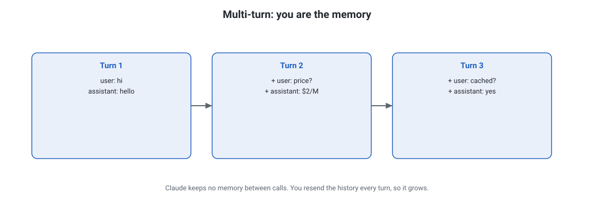
Multi-turn: Claude keeps no memory between calls, so you resend the history every turn, and the request grows.
How to read this diagram
Turn 1: one exchange.
Turn 2: the full turn 1 plus the new exchange.
Turn 3: everything so far plus the new exchange.
What breaks if a part fails: If you send the whole conversation every turn without thinking, token costs compound and cache misses spike.
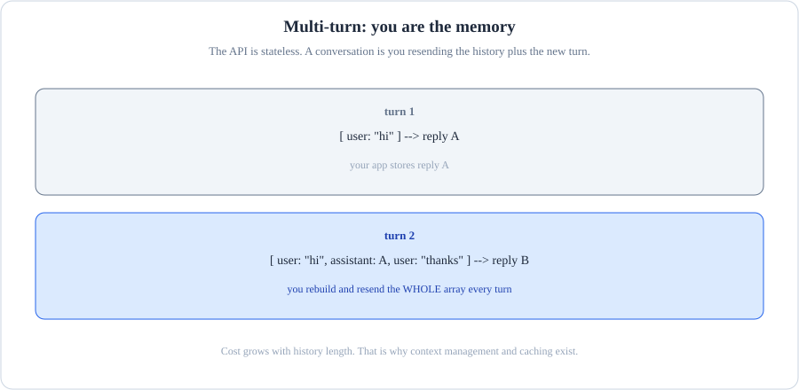
Multi-turn: you are the memory. You resend the whole conversation each turn. The API keeps no memory.
How to read this diagram
The API is stateless. It remembers nothing between calls.
You resend the full messages array every turn. This includes user, assistant, user, and assistant messages.
Your application is the memory. Truncate old turns when the context window fills.
What breaks if a part fails: If you send only the latest turn, the model loses the thread. The model contradicts itself.
Rung 1: the plainest version. The API is stateless. A conversation is you resending the history plus the new turn. Your application owns the messages array.
Turn 1: [ user: "hi" ] --> reply A
Turn 2: [ user: "hi", assistant: A, user: "thanks" ] --> reply B
^^^^^^^^^^^^^^^^^^^^^^^^^^^^^^^^^^^^^^^^
you rebuild and resend the whole array every turn
# Your app builds this array. The API never stores it for you.
conversation = [
{"role": "user", "content": "My order 48151623 arrived damaged."},
{"role": "assistant", "content": "I am sorry to hear that. Can you describe the damage?"},
{"role": "user", "content": "The screen is cracked along the left edge."},
]
reply = client.messages.create(
model="claude-sonnet-5",
max_tokens=1024,
system="You are a support agent. Be brief and empathetic.",
messages=conversation, # full history, every time
)
# After the call, append the reply so the next turn includes it:
conversation.append({"role": "assistant", "content": reply.content[0].text})
Rung 2: two consequences. First, cost grows with history. Every turn resends every earlier token as input. Turn 50 costs more than turn 1.
Second, the prefill trick. End the array with an assistant message. Claude continues the message. This is the cleanest way to force JSON output.
input tokens per turn: |## turn 1: cheap
|######## turn 10: the whole history, resent
|################ turn 50: expensive
prefill: [..., {"role": "assistant", "content": "{"}] --> Claude completes the JSON object
Rung 3: the production fix. Long conversations need compaction. Summarize old turns into one block. Or keep only a recent window. Tool results also travel here. tool_result blocks ride inside user-role messages in this same array. You will write that loop in the tool-use unit.
turns 1-40 --> [summary block: "customer reported cracked screen..."]
turns 41-50 --> kept verbatim
result: one compact array, bounded cost, no lost context that matters
Why does turn 50 of a chat cost more than turn 1?
Because the API is stateless: you resend the whole history every turn, so input tokens grow with conversation length.
Next: These are the sampling parameters: temperature, top_p, top_k.
Sampling parameters: temperature, top_p, top_k
Why this comes next.
You can hold a conversation. These are the three knobs that shape each answer: temperature, top_p, top_k.
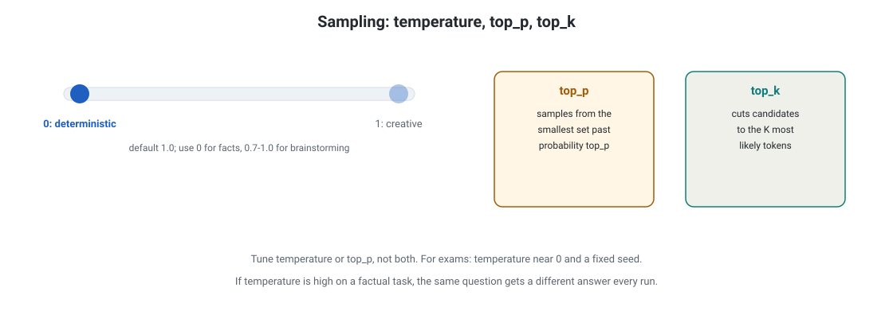
Sampling: temperature 0 is deterministic, 1 is creative. top_p and top_k cut the tail of unlikely tokens.
How to read this diagram
The dial runs from 0 (always the most likely token) to 1 (free sampling). Default is 1.0.
Use 0 for facts, extraction, and JSON. Use 0.7 to 1.0 for brainstorming.
top_p samples from the smallest set past probability top_p. top_k keeps the K most likely tokens.
Tune temperature or top_p, not both.
What breaks if a part fails: If temperature is high on a factual task, the same question gets a different answer every run.
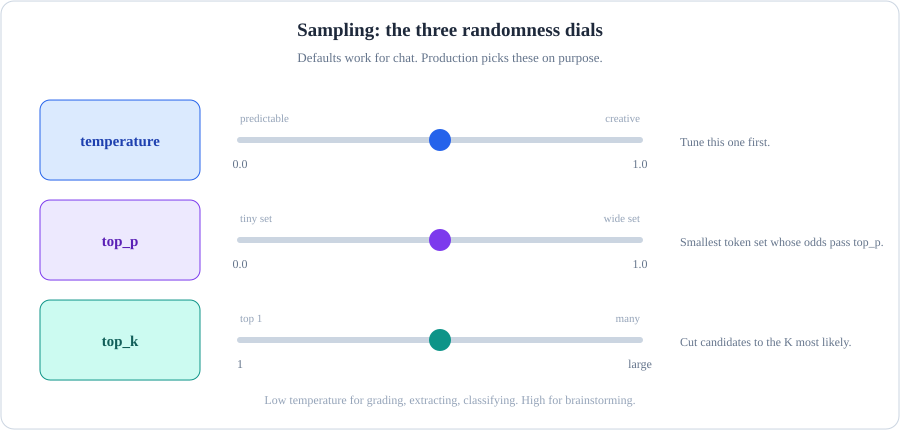
Sampling: temperature spreads or sharpens the distribution. Top_p and top_k cut the tail.
How to read this diagram
Temperature 0 is deterministic. Temperature 1 is creative. Use a low temperature for facts. Use a higher temperature for brainstorming.
top_p keeps the smallest set of tokens. The tokens cover p of the probability. 0.9 is a common default value.
top_k keeps only the k most probable tokens. A small k value means the output is safe, boring, and predictable.
For exams, set the temperature near 0. Use a fixed seed. This gives the closest thing to reproducibility.
What breaks if a part fails: If the temperature is high on a factual task, the same question gets a different answer each time.
[Sampling parameters: temperature, top_p, top_k] Rung 1: the plainest version. Temperature is a dial from 0.0 to 1.0. It controls randomness. The default value is 1.0.
At 0, Claude almost always picks the most probable token. This makes it deterministic and reproducible. Near 1, Claude samples freely. This makes it varied and creative.
0.0 ------------------------- 1.0
predictable creative
"the same answer every run" "a different take each run"
Rung 2: the other two dials. (nucleus sampling) samples from the smallest token set. The combined probability of this set passes top_p. top_k cuts candidates to the K most probable tokens. You tune temperature or top_p. Do not tune both at the same time. top_p
all tokens, ranked by probability
[ the | a | an | this | that | ... ]
<-top_k=3-> <-top_p=0.9->
keep 3 tokens keep tokens until 90% probability mass
[Sampling parameters: temperature, top_p, top_k] Rung 3: the rules of thumb, plus the 5.x caution. For classification, extraction, JSON, or anything graded, use temperature=0. For brainstorming and copy, use 0.7 to 1.0. The 5.x generation uses adaptive thinking.
This is the model's built-in reasoning step. The Thinking unit, two units ahead, covers this fully. Leave sampling at the default values for these models. Only change it if the task requires it.
The reasoning quality is set for default sampling. Increasing randomness usually adds noise to the plan. It does not add brilliance to the answer.
graded / structured work --> temperature=0
creative work --> temperature=0.7-1.0
5.x reasoning models --> defaults, unless you have a measured reason
You need byte-identical JSON from 1,000 runs. What do you set?
temperature=0. Deterministic output for graded, structured work.
Next: Tool use gives Claude hands.
Tool use: giving Claude hands
Why this comes next.
Claude only talks now. Tool use gives Claude hands. Your code runs your functions when the model asks. The results are fed back in.
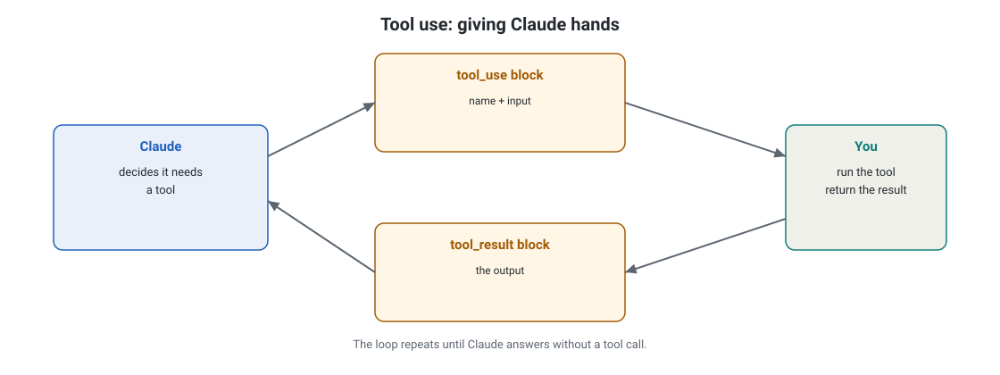
Tool use: Claude emits a tool_use block, you run the tool and return a tool_result block, and the loop repeats until Claude answers.
How to read this diagram
Claude decides it needs a tool and emits a tool_use block with a name and input.
You run the tool and return the output as a tool_result block.
The loop repeats until Claude answers without a tool call.
What breaks if a part fails: If the tool result is unclear, Claude cannot continue the task, and the loop stalls or hallucinates.
Rung 1: the plainest version. A model without tools can only talk. Tool use lets it act: it can query your database or call your APIs. The key insight the exam will probe: Claude never runs your tools. It only asks. Your code runs them and hands the results back.
Claude: "I need order 48151623's status" (a tool_use REQUEST)
|
Your code: runs get_order_status("48151623") (the EXECUTION)
|
Claude: "Your order shipped Tuesday" (final answer, with the data)
[Tool use: giving Claude hands] Rung 2: the loop. You describe tools as JSON Schema. Claude emits tool_use blocks when it needs data. You execute and return tool_result blocks.
These blocks have matching IDs. You repeat this process until stop_reason is no longer tool_use. One turn can hold several tool_use blocks. Run independent calls at the same time. Return all results at once.
your app Claude API
|--- messages + tools -------->|
|<-- tool_use blocks ----------| stop_reason = "tool_use"
| (run functions here)
|--- tool_result blocks ------>| ids must match exactly
|<-- tool_use blocks ----------| (another round, if needed)
|--- tool_result blocks ------>|
|<-- final text ---------------| stop_reason = "end_turn": done
# 1. DESCRIBE the tool. Claude decides when to call it from name + description.
# Tool definitions travel as input tokens on every call, so keep them tight.
tools = [
{
"name": "get_order_status",
"description": "Look up a customer's order by numeric order id. Returns status and tracking number.",
"input_schema": { # JSON Schema: the contract for the arguments Claude may pass
"type": "object",
"properties": {
"order_id": {"type": "string", "description": "Numeric order id, e.g. 48151623"}
},
"required": ["order_id"],
},
}
]
# 2. ASK. Claude either answers in text or emits tool_use blocks.
response = client.messages.create(
model="claude-sonnet-5",
max_tokens=1024,
tools=tools,
messages=[{"role": "user", "content": "Where is order 48151623?"}],
)
# 3. LOOP until Claude stops asking for tools.
MAX_TURNS = 20 # safety guard: a runaway loop bills you per turn
turns = 0
while response.stop_reason == "tool_use" and turns < MAX_TURNS:
turns += 1
tool_results = []
for block in response.content:
if block.type == "tool_use":
# 4. EXECUTE in your code. Claude only asked; you do the work.
result = run_your_function(block.name, block.input)
tool_results.append({
"type": "tool_result",
"tool_use_id": block.id, # must match the request id exactly
"content": result,
})
# 5. FEED BACK: assistant message (with tool_use) + user message (with results).
response = client.messages.create(
model="claude-sonnet-5",
max_tokens=1024,
tools=tools,
messages=response_messages_so_far + [
{"role": "assistant", "content": response.content},
{"role": "user", "content": tool_results},
],
)
# stop_reason "end_turn": Claude is done. The final text is your answer.
[Tool use: giving Claude hands] Rung 3: the production picture. There are two types of tools. Client tools tools run in your application. You define them.
Claude requests them. You execute them. This is everything described above. Server tools tools run on Anthropic's side.
These include web_search, web_fetch, code_execution, MCP connectors, and tool_search. You declare them. Anthropic executes them. The results arrive inside the response.
The tool_choice parameter controls the behavior. The auto value is the default. The any value forces at least one call. The tool value forces a specific tool.
The none value means pure text for this turn. Tool definitions count as input tokens on every call. So, a system with 40 tools increases the cost of every request.
CLIENT tools: you define -> Claude asks -> YOUR code runs -> you return results
SERVER tools: you declare -> Anthropic runs -> results arrive in the response
This is the client-tool loop. Claude asks a question. Your code executes. The results feed back into the messages. The MAX_TURNS guard is necessary in production.
Follow the green path first. The user task becomes messages[]. Claude thinks. stop_reason comes back tool_use. The orange diamond asks one question: Is it a tool call or a final answer?
If the answer is YES, go to your executor. The executor runs bash, read_file, write_file, or other tools that you define. Then the orange dashed path carries tool_result back into messages[]. The loop repeats. If the answer is NO, drop down to the final response with stop_reason: "end_turn".
The red dashed box is your billing seatbelt. MAX_TURNS = 20 stops a confused agent from looping forever.
The loop is the same as the Claude Code loop. It plans, chooses, and gates permission. It executes, observes, and decides.
How to read this diagram: steps 1 to 6 run in order. Step 6 then asks a question: task done, or loop again? The dotted arrow from step 5 back to step 2 is the whole game: every observation becomes new context for a better plan. The yellow box between choosing and executing is the permission gate (Allow / Ask / Deny).
Your rules decide what runs automatically, what needs approval, and what stays blocked. The right-hand panel lists the available tools. MCP servers and subagents expand the toolkit. The caption line at the bottom is worth memorizing: skills (reusable instruction packs Claude Code loads for specific task types) feed step 2, MCP expands step 3, and hooks (deterministic code that intercepts a tool call before it runs and can veto or modify it) intercept step 4.
Decision: client tool or MCP server?
Build a client tool when the logic is yours. This includes your database, your internal API, and business rules that only your code knows. The function lives in your codebase. You own its uptime.
Use an MCP server when the integration is standard. This includes files, git, Postgres, Slack, and web search. Someone already wrote and maintains that server. You configure it instead of coding it.
One server can have many hosts. The same MCP server plugs into Claude Code, your application, and your chat UI with zero recoding. A full MCP unit comes next.
The tool-use traps
These are three classic failures. First, do not forget the loop. A single messages.create with tools only gets you the first tool request. Without the loop, you will not see the answer.
Second, do not use mismatched tool_use_id. Every tool_result must have the exact ID of its tool_use block. If the ID is not exact, the API rejects the call. Third, do not omit a turn cap.
An agent that calls tools repeatedly bills you for each lap. Therefore, MAX_TURNS or a cost budget is mandatory.
Who executes a client tool: Claude or your code?
Your code. Claude only emits a tool_use request; your loop runs the function and returns the result as a tool_result block.
Next: Thinking means letting Claude reason before it speaks.
Thinking: letting Claude reason before it speaks
Why this comes next.
Claude can reason before it speaks. This process has a name: thinking. Thinking changes the answer quality. It changes the latency. It changes the cost.
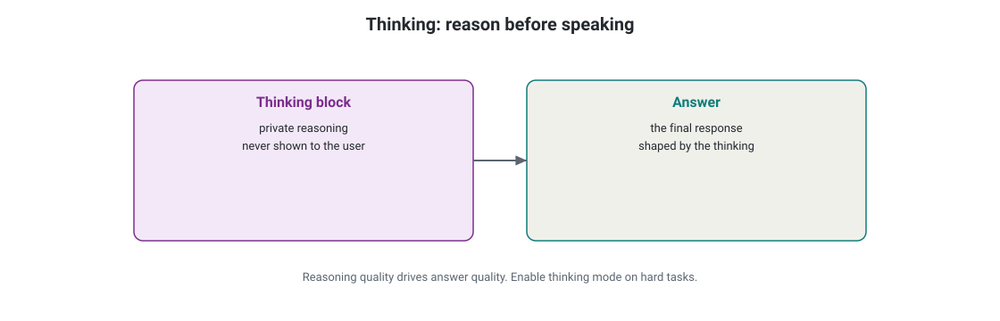
Thinking: a private thinking block holds the reasoning, then the answer follows. Reasoning quality drives answer quality.
How to read this diagram
Left card: the thinking block. Private reasoning, never shown to the user.
Right card: the final answer, shaped by the thinking.
Enable thinking mode on hard tasks.
What breaks if a part fails: If you skip thinking on a hard task, the answer is a guess wearing a confident tone.
Rung 1: the plainest version. Some models think in a private scratchpad. They think before they answer. You see the final answer. The scratchpad stays hidden. You can ask for a summary of the scratchpad.
message = client.messages.create(
model="claude-opus-5",
max_tokens=16000, # must leave room: thinking tokens + answer < max_tokens
thinking={"type": "adaptive"}, # the model sizes its own reasoning effort
messages=[{"role": "user", "content": "Design a retry strategy for this webhook flow..."}],
)
# The response interleaves thinking blocks (private) and text blocks (the answer).
[Thinking: letting Claude reason before it speaks] Rung 2: adaptive thinking and the model map. On the 5.x generation, adaptive thinking means the model decides how much reasoning a task needs. You do not set a token budget. As of September 2026: Opus 4.6 through 4.8 and Sonnet 4.6 support it.
On 4.7 and 4.8, it is off by default. You must set it explicitly. The API rejects a manual budget_tokens with a 400 error. Fable 5 and Mythos 5 always have adaptive thinking.
There is no off switch. 5.x models also show effort levels (low through xhigh) as a simpler control.
thinking={"type": "adaptive"} --> model judges the task, sizes its own effort
effort="low" ... "xhigh" --> your coarse override, no token math
thinking={"type":"adaptive"} on 4.7/4.8 without enabling --> off (must set explicitly)
budget_tokens on 4.7/4.8 --> 400 error (rejected)
Rung 3: the production rules. Thinking blocks have a signature. You must pass this back unmodified in later turns. It is an integrity seal.
Tampering with it will cause the API to reject the call. Thinking costs output tokens. Long reasoning on simple tasks wastes money. display: "summarized" gives users a readable summary of the reasoning. It does not show the raw scratchpad. Use it in user-facing products.
turn 1: [thinking block + signature ABC] --> answer
turn 2: resend the thinking block with signature ABC UNCHANGED, or the API rejects the call
You pass thinking blocks back in a follow-up turn. What must you never change?
The signature. It must round-trip unmodified or the API rejects the request.
Next: The system caches the prompt. You pay for the prefix one time.
Prompt caching: pay for the prefix once
Why this comes next.
Thinking and tools make requests larger. Much of the information you send repeats each turn. Caching means you pay for the stable prefix one time. Then you read it back at a low cost.
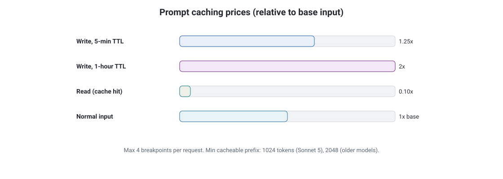
Prompt caching prices: a write costs 1.25x base input for 5-minute TTL (2x for 1-hour TTL), and a read costs 0.10x.
How to read this diagram
Read the bars top to bottom.
Writes cost more than base input. Reads cost a tenth.
Max 4 breakpoints per request. Minimum cacheable prefix: 1024 tokens on Sonnet 5, 2048 on older models.
What breaks if a part fails: If the prefix is short or volatile, the write never pays back. Caching then adds cost instead of cutting it.
Rung 1: the plainest version. Every request reprocesses its input tokens. Prompt caching lets you pay the full price to process a long, stable prefix once. Then you pay only 10% of the input price to reuse it for five minutes.
call 1: [ 20k system prompt ] + question --> pay FULL price (cache written)
call 2: [ 20k system prompt ] + question --> pay 10% for the prefix (cache hit)
call 3: [ 20k system prompt ] + question --> pay 10% for the prefix (cache hit)
message = client.messages.create(
model="claude-sonnet-5",
max_tokens=1024,
system=[
{
"type": "text",
"text": LONG_STABLE_PROMPT, # 20k tokens of instructions, docs, examples
"cache_control": {"type": "ephemeral", "ttl": "5m"},
# ttl "5m" is the default. "1h" costs more to write, better for slow traffic.
}
],
messages=[{"role": "user", "content": user_question}], # the changing part stays uncached
)
Rung 2: the prefix-match mechanic. A cache hit needs the request to start with exactly the cached bytes, in order. Anything above your cache_control checkpoint stays cached. The API processes anything below it fresh.
If you reorder the content or change one byte in the prefix, you get a miss. Design rule: stable content first (system prompt, tool definitions, reference docs), volatile content last (timestamps, user input). Never change tools or models mid-conversation. A new tool list is a new prefix.
Prefix matching is the main mechanic. An identical start means a cache hit. Any change in the prefix means a miss.
This is how to read the diagram. The top box shows your first request. Everything above the blue "Cache checkpoint" line goes to the cache. Segment A, segment B, and segment C go to the cache.
Segment D is after the checkpoint. The system processes segment D fresh each time. The three boxes below show later requests. The left box starts with segment A, segment B, and segment C in order. cache hit.
You pay the 10% read price for the prefix. The middle box starts with segment B. The prefix is different. So, cache miss.
The system processes everything at full price. The right box has the same content. But someone reordered the content. Segment E is first. cache miss again.
Matching is positional. Matching is not by content. The order is the contract.
Rung 3: the numbers and the verification habit. The maximum is 4 breakpoints per request. Write price: 1.25x base input for 5-minute TTL, 2x for 1-hour TTL. Read price: 0.10x.
Break-even: about 2 reads pay back a 5-minute write, and about 3 reads pay back a 1-hour write. Minimum cacheable prefix: 512 tokens on the newest models, up to 4096 on some older ones. Measure TTL from the start of the request that wrote the cache. The habit that separates production engineers from everyone else: check message.usage.cache_read_input_tokens on every call. If it stays near zero, your prefix shifts, and you pay write prices for nothing.
verify every call: usage.cache_read_input_tokens >> 0 --> caching works
usage.cache_read_input_tokens ~= 0 --> prefix is shifting, fix the ordering
break-even: 1 write at 1.25x is repaid by ~2 reads at 0.10x; reads after that are profit
Prompt caching numbers
A request has a maximum of 4 breakpoints. A breakpoint is each cache_control marker.
Write price: The price is 1.25 times the base input price for a 5-minute TTL. The price is 2 times the base input price for a 1-hour TTL.
The read price is 0.10 times the base input price. This is where the savings are.
About two reads pay back a 5-minute write. About three reads pay back a 1-hour write.
The minimum cacheable prefix is 512 tokens on the newest models. It is up to 4096 tokens on some older models. Opus 4.6/4.5 and Haiku 4.5 need 4096 tokens.
The TTL starts when the request that wrote the cache starts.
Decision: should this request use prompt caching?
Cache a prefix when the same long prefix repeats across requests. This includes system prompts, tool definitions, long reference documents, and stable conversation history. Do not cache a prefix when each request is new. Do not cache a prefix when the prefix is shorter than the minimum length. Do not cache a prefix when traffic is sparse and the 5-minute TTL always expires between calls. If a prefix will be read at least two more times within the TTL, caching is beneficial.
90% of Claude Apps Leak Context shows a real-world failure mode. It shows sending the whole conversation each turn. It shows cache misses increase. It shows SDK patterns that fix the problem. The habit it teaches is to cache the stable front and slice the history. This habit is what the exam rewards.
Your cache hit rate drops to zero after adding a timestamp to the system prompt. Why?
The timestamp changes the prefix on every request, so the prefix hash never matches and every call pays a fresh cache write.
Next: The Batches API has half price. The Batches API delivers the next day.
The Batches API: Half Price, Next Day
Why this comes next.
Caching reduces the price of repeated prefixes. The Batches API reduces the price of all work that has no deadline. It gives 50% off. It gives answers within 24 hours.
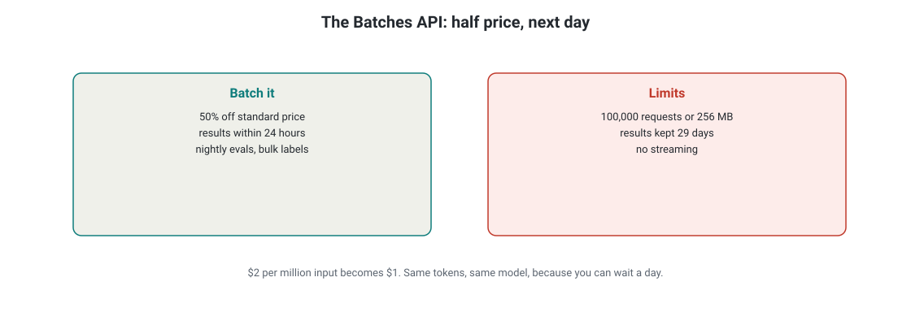
The Batches API: 50% off standard price, results within 24 hours. Limits: 100,000 requests or 256 MB per batch, results kept 29 days, no streaming.
How to read this diagram
Left card: when to batch. Nightly evals, bulk classification, backfills. Latency does not matter.
Right card: the limits that matter.
$2 per million input becomes $1. Same tokens, same model, because you can wait a day.
What breaks if a part fails: If results sit past 29 days, the API deletes them. Download them.
Rung 1: the plainest version. Some workloads do not need an answer now. These include nightly evaluations, bulk classification, and backfilling labels. The Batches API processes your requests within 24 hours. It charges 50% of standard prices.
batch price = 0.5 × standard price
The where: standard price is the normal per-token price for the model. The batch price is what the Batches API charges for requests. The API processes the requests within 24 hours.
Worked example.
One million input tokens on Sonnet 5 cost $2.00 at the standard rate of $2 per million. A batch of the same tokens costs $1.00. This is 0.5 multiplied by $2.00. You pay half the bill for the same tokens and the same model. You can wait one day for the batch process to complete.
you: [req 1] [req 2] ... [req 40,000] --one batch-->
... up to 24 hours pass ...
API: [result 1] [result 2] ... at HALF the normal price
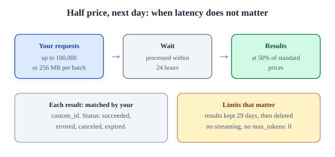
This is the Batches API. It offers half price and next day delivery. Use it when latency does not matter. Each batch can have up to 100,000 requests or 256 MB. The system deletes the results after 29 days.
Rung 2: the mechanics. One batch holds up to 100,000 requests or 256 MB. Each request has your custom_id. The custom_id is 1 to 64 characters.
It can be letters, digits, _, or -. The custom_id returns with its result. You can match the requests to the results. Poll processing_status. in_progress becomes ended. Each result is succeeded, errored, canceled, or expired.
batch = client.messages.batches.create(
requests=[
{
"custom_id": "ticket-0001", # your id: returned with the result for matching
"params": {
"model": "claude-haiku-4-5-20251001",
"max_tokens": 512,
"messages": [{"role": "user", "content": "Classify this ticket: ..."}],
},
},
# ... up to 100,000 of these
]
)
# Poll batch.processing_status: in_progress -> ended.
batch created --> processing_status: in_progress --> ended
| |
100,000 requests max per-request: succeeded / errored / canceled / expired
256 MB max matched to you by custom_id
The system keeps Rung 3: the limits that matter. results for 29 days. Then the system deletes the results. Download the results. The system does not support streaming in batches.
The system does not support max_tokens: 0 in batches. The cache behavior is best-effort. The exam asks about this tradeoff. When the latency is not important and the volume is high, batches decrease your bill by one half.
day 0: batch ended, results ready day 29: results deleted (download first)
supported: messages, tools, thinking NOT supported: streaming, max_tokens: 0
You must label 40,000 support tickets by tomorrow morning. Batches or real-time calls?
Batches: 50% cheaper, 24-hour window fits, 40,000 requests is under the 100,000 limit.
Next: Embeddings: This is a gap you must know about.
Embeddings: The gap you must know about
Why this comes next.
All previous information is inside the Claude API. One gap exists. You must know about embeddings. Embeddings power retrieval. They live in another location.
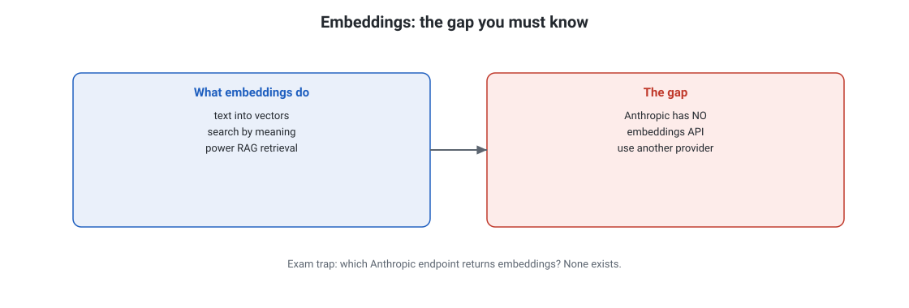
Embeddings turn text into vectors so you can search by meaning. The gap: Anthropic has no embeddings API, so you use another provider.
How to read this diagram
Left card: what embeddings do. Text becomes lists of numbers (vectors).
Right card: the gap. The Claude API returns text, not vectors.
The official docs point you to other providers for embeddings.
What breaks if a part fails: On the exam, any question asking which Anthropic endpoint returns embeddings has one correct answer: none exists.
Rung 1: the plainest version. Embeddings change text into lists of numbers. These numbers are vectors. You can search by meaning, not by keywords. Embeddings power RAG retrieval, semantic search, and clustering.
Rung 2: the gap. This fact surprises many people: Anthropic has no embeddings API. The Claude API returns text. It does not return vectors.
There is no endpoint that makes embeddings from your documents. The official documentation directs you to Voyage AI. This is Anthropic's recommended embeddings provider. You call Voyage for embeddings.
Store the embeddings in your vector database. Retrieve the relevant chunks. Feed those chunks to Claude as context.
your docs --> Voyage AI (embeddings) --> vector DB --> retrieve top chunks
|
user question --> Claude API <-- retrieved chunks as context-+
(Anthropic makes no vectors; the embedding box is third-party)
Rung 3: the exam trap. Any question asks which Anthropic endpoint returns embeddings. The correct answer is: none exists. Know the architecture above. You will not make a mistake.
exam stem: "Which Anthropic endpoint returns embeddings?"
correct answer: none exists. Use a third-party provider such as Voyage AI.
Which Anthropic API endpoint returns text embeddings?
None. Anthropic offers no embeddings API; the documented path is a third-party provider such as Voyage AI.
Next: The model lineup: practitioner level.
The model lineup: practitioner level
Why this comes next.
You know the mechanics. Now know the cast. The cast includes the four models. It shows what each model is for. It shows the price pattern to memorize.
Rung 1: the plainest version. has four tiers. The tiers go from the cheapest to the most expensive. The price shows the intelligence of the model. You do not need benchmark scores for the exam. You only need the selection logic.
Haiku 4.5 < Sonnet 5 < Opus 5.5 < Fable 5.1
$1 / $5 $2 / $10 $4 / $20 $10 / $50 (per MTok in/out: MTok = millions of tokens)
fast+cheap workhorse hard jobs hardest reasoning
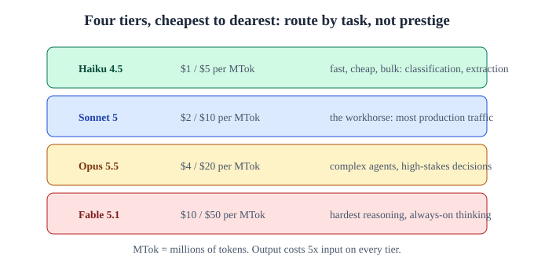
There are four tiers, from the cheapest to the most expensive. Select a tier by the task, not by the prestige. The output costs five times the input on every tier.
Model
API family ID
Context
Maximum output
Input / output per MTok
Use it when
Fable 5.1
claude-fable-5-1
[The model lineup: practitioner level] 1M tokens
[The model lineup: practitioner level] 128K
[The model lineup: practitioner level] $10 / $50
[The model lineup: practitioner level] The model does the hardest reasoning. The model does always-on adaptive thinking.
Opus 5.5
[The model lineup: practitioner level] claude-opus-5
[The model lineup: practitioner level] 1M tokens
[The model lineup: practitioner level] 128K
[The model lineup: practitioner level] $4 / $20
[The model lineup: practitioner level] The model does complex agents. The model does high-stakes decisions.
[The model lineup: practitioner level] Sonnet 5
[The model lineup: practitioner level] claude-sonnet-5
The model lineup: practitioner level. 1M tokens.
The model lineup: practitioner level. 128K.
The model lineup: practitioner level. $2 / $10.
This is the workhorse. It handles most production traffic.
Haiku 4.5
The model lineup: practitioner level. claude-haiku-4-5-20251001.
The model lineup: practitioner level. 200K tokens.
The model lineup: practitioner level. 64K.
The model lineup: practitioner level. $1 / $5.
The model lineup: practitioner level. Fast, cheap, bulk: classification, extraction.
Rung 2: routing by task.. The production pattern: choose the tier by task, not by prestige. Haiku handles extraction and formatting. Sonnet handles reasoning steps.
Opus or Fable handles the few decisions where being wrong is expensive. A model that 429s at step 4 of a 12-step pipeline is not a genius. It is a bottleneck.
incoming work --> router (by task complexity + cost of being wrong)
|-- trivial: extract, format, classify --> Haiku 4.5
|-- standard: reason, draft, decide --> Sonnet 5
|-- critical: high-stakes judgment --> Opus 5.5 / Fable 5.1
Rung 3: ids, windows, and compounding math.Family ids (claude-sonnet-5) track the latest snapshot automatically. dated ids (claude-haiku-4-5-20251001) pin one exact snapshot. Pin the snapshot for reproducibility (evals). Track the snapshot for freshness (production chat).
A 1M context window means you can send a million tokens. You should not send a million tokens. Cache-creation cost and latency increase with the amount of data you send. Effort levels (low through xhigh) on 5.x models give coarse control over reasoning depth.
The price math compounds. Batches cost 50% of the list price. Cache reads cost 10% of the input price. A Haiku batch call with a warm cache is approximately two hundred times cheaper than a cold Fable call.
cost per 1M Haiku input tokens:
standard $1.00 --> batch (50%): $0.50 --> warm cache read (10%): $0.05
ids: claude-sonnet-5 family id: tracks the latest snapshot
claude-haiku-4-5-20251001 dated id: pins one exact snapshot
Your pipeline classifies 2M tickets a month and summarizes 50 escalations. Which models?
Haiku for the bulk classification (cheap, fast), Sonnet or Opus for the 50 escalations where quality matters.
The model lineup: practitioner level. Next: MCP is the universal connector.
MCP: The Universal Connector
Why this comes next.
Models use APIs to call tools. You wire the APIs by hand. Use the universal connector instead. MCP is the standard. It ends the N x M integration problem.
Rung 1: the plainest version. Without a standard, every app rebuilds the same integrations: N apps times M tools, with every pair hand-built. The Model Context Protocol turns N x M into N + M. Each app speaks MCP once. Each tool does the same. Any pair connects.
WITHOUT: app1-tool1 app1-tool2 app2-tool1 app2-tool2 ... (N x M hand-built pairs)
WITH: app1 --\
MCP app2 ----> MCP <---- tool1
standard app3 --/ standard tool2 (N + M: each side implements once)
Rung 2: the three roles and three primitives. MCP is an open standard. Anthropic published it in November 2024. It runs on JSON-RPC 2.0.
The host is the application that the user touches. This includes Claude Code and your chat UI. It controls the conversation and the permissions. The client lives inside the host.
There is one client per server. It speaks the protocol for the host. The server shows capabilities to the outside world. A server offers three primitives. These are tools (things the model can do), resources (data the model can read), and prompts (reusable instruction templates).
Host, client, server. The host holds one client for each server. Each pair speaks the MCP protocol.
Read this diagram. The large rounded box is the host. This is your application. Two MCP clients are inside the host.
There is one client for each integration. Each client talks through the MCP protocol. It talks to its own MCP server on the right. Add a third integration.
You add one client and one server. The existing pairs do not change. This is the N + M payoff, as shown.
Rung 3: MCP inside the Claude API. In the API, MCP appears as server tools. These are MCP connectors. You declare the connector.
Anthropic runs it on its infrastructure. The results arrive in the response. Compare this with the tool-use unit. Client tools run your code.
MCP connectors run Anthropic's infrastructure against a standard server. Build a client tool when the logic is yours. This includes your database and your business rules. Use an MCP server when the integration is standard.
This includes files, git, Postgres, and Slack. Someone already maintains the MCP server.
Speed:
The Watch: Anthropic team explains the MCP. The team includes API engineers and MCP engineers. They explain why the MCP exists. They explain the host, client, and server split. They explain how the MCP pairs with the Claude API. The people who built the protocol provide this information. The transcript was vetted in September 2026.
What problem does MCP solve, in one sentence?
The N x M integration problem: without it every app hand-builds every tool integration; with it each app and each tool implements the standard once.
Next: Claude Code and the Agent SDK are at the user level.
Claude Code and the Agent SDK: User Level
Why this comes next.
MCP connects models to tools. This chapter discusses the user-facing products. These products are Claude Code and the Agent SDK. It shows which product to use.
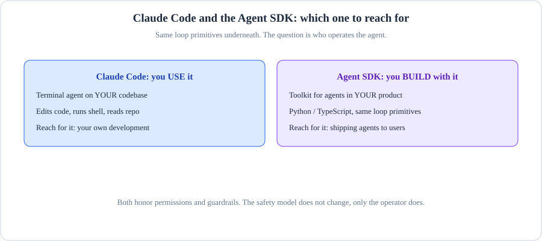
This shows Claude Code and the Agent SDK at the user level. Code versus SDK: the CLI is the finished product. The SDK is the building block.
How to read this diagram
Claude Code is the finished tool. It is a terminal agent. It uses your checkout and your permissions.
The Agent SDK is the building block. Embed the same agent loop in your application.
Use Code when a human drives. Use the SDK when your code drives.
What breaks if a part fails: If you script the CLI like an SDK, you inherit a human interface: prompts, waits, and surprises.
Rung 1: the plainest version. Two ways to get agents without hand-rolling the tool loop yourself. Claude Code is Anthropic's terminal agent: it edits code, runs shell commands, and reads your repo on its own. The Agent SDK is the toolkit for building your own agents in Python or TypeScript, using the same loop primitives.
Claude Code: terminal --> agent works on YOUR codebase (you use it)
Agent SDK: your code --> agent lives inside YOUR product (you build it)
Rung 2: the safety model and the selection rule. Claude Code runs every action through a permission gate. The gate has three settings: Allow, Ask, and Deny. Allow means routine reads run freely.
Ask means destructive commands need approval. Deny means the system blocks the command. Your rules decide the setting for each action. Use Claude Code if the job is to work on a codebase. Build on the Agent SDK if the job is to embed an agent inside your product.
Rung 3: what is underneath. Both systems use the same Messages API mechanics. You already know these mechanics. They include stateless turns, tool_use loops, and prompt caching.
Prompt caching does the heavy cost lifting. This is not magic. It is the packaged units from earlier lessons.
Your product needs a support agent inside your own UI. Claude Code or Agent SDK?
Agent SDK. Claude Code is a terminal tool for working on code; the SDK builds agents you embed in your product.
Next: Streaming delivers tokens as they arrive.
Streaming: tokens as they arrive
Why this comes next.
You can build with the products. Now consider a production detail that users feel directly. Use streaming here. Streaming delivers tokens as they arrive. It does not make you wait a long time.
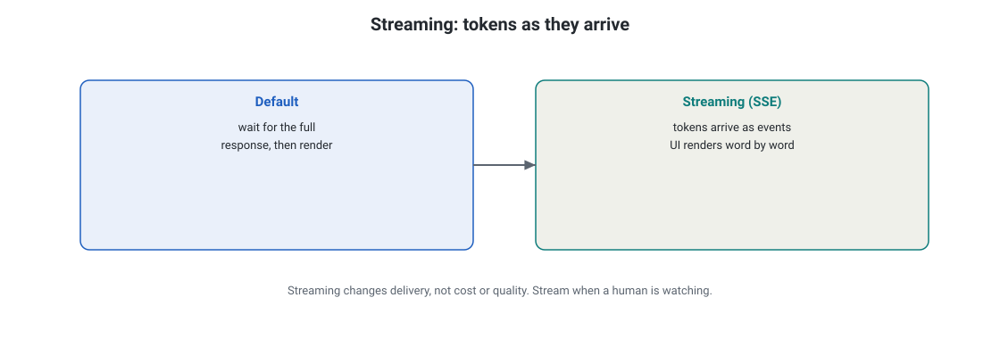
Streaming: tokens arrive as server-sent events while Claude is still generating, so the UI renders word by word.
How to read this diagram
Left card: the default. Wait for the full response, then render.
Right card: streaming. Tokens arrive as events; the UI renders immediately.
Streaming changes delivery, not cost or quality.
What breaks if a part fails: If no one watches (batch jobs, tool-use loops), streaming adds complexity for zero benefit.
Rung 1: the plainest version. By default, the API waits until the full response is ready. Streaming changes this. Tokens arrive as server-sent events (SSE) while Claude generates them. Your UI renders text word by word, like a chat application.
non-streaming: wait .................... --> full answer at once
streaming: "The" " quick" " brown" ... --> words appear as generated
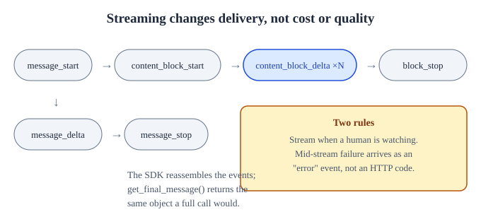
Streaming changes the delivery method. It does not change the cost or the quality. The SDK reassembles the events. Mid-stream failures arrive as error events. They do not arrive as HTTP codes.
Rung 2: the event sequence. Each token chunk arrives as a content_block_delta. The SDK reassembles the chunks. get_final_message() returns the same message object as a non-streaming call. Thinking blocks stream as thinking_delta and signature_delta.
# The SDK reassembles the events for you. get_final_message()
# returns the same message object a non-streaming call would.
with client.messages.stream(
model="claude-sonnet-5",
max_tokens=1024,
messages=[{"role": "user", "content": "Write a haiku about caching."}],
) as stream:
for text in stream.text_stream:
print(text, end="", flush=True) # render each chunk live
final = stream.get_final_message() # usage, stop_reason, full content
Stream Rung 3: when to stream, and the failure mode. when a human watches. This includes a chat UI and long generations where perceived latency is important. Do not stream when no one watches. This includes batch jobs, tool-use loops that only need the final object, and evaluations.
If something fails mid-stream, it arrives as an error event. It does not arrive as an HTTP error code. Your handler must watch for the error event. Streaming changes delivery. It does not change cost or quality.
human watching? --yes--> stream (chat UI, long generations)
|
no --> don't stream (batches, tool loops, evals)
mid-stream failure arrives as an "error" EVENT, not an HTTP code
Your nightly eval runs 5,000 prompts through the Batches API. Stream or not?
Not. Nobody watches a batch job, and batches do not support streaming anyway.
Next: The rate limits are RPM, ITPM, and OTPM.
Rate limits: RPM, ITPM, OTPM
Why this comes next.
Streaming changes the perceived speed of answers. Rate limits control how fast you can make requests. The rate limits are RPM, ITPM, and OTPM. They also control what happens when you reach them.
Rung 1: the plainest version. Anthropic controls usage with three measures. These measures are RPM (requests per minute), ITPM (input tokens per minute), and OTPM (output tokens per minute). The limits increase with your usage tier.
your app --> [ RPM | ITPM | OTPM ] --> Claude API
^^^^^^^^^^^^^^^^^
three dials, all must stay under the cap
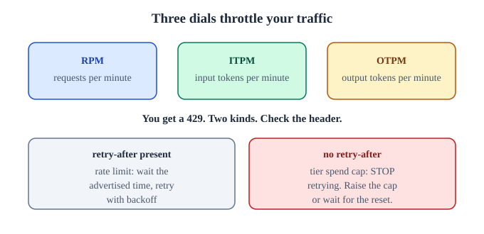
Three dials control the traffic. A 429 error with a retry-after message means that you must wait and retry. A 429 error without a retry-after message means that you reached a tier spend cap. Retrying is not useful in this case.
Rung 2: the 429 dance. If you reach a limit, the system returns 429. It includes a retry-after header. This header tells you how long to wait.
The production pattern is mandatory. Catch the 429 error. Wait the advertised time. Retry with backoff.
Do not send many requests to the endpoint. The limit will not change if you ask twice.
call --> 429 (retry-after: 12s) --> wait 12s --> retry --> 200
(backoff grows if it 429s again)
Rung 3: two 429s that mean different things. A rate-limit 429 carries retry-after. Wait and retry automatically. A tier-cap 429 comes withoutretry-after.
You reach a spend cap, not a speed limit. Retrying is pointless. Raise the cap or wait for the reset. If your own spend limit trips, the API returns 400 (invalid_request_error).
It does not return 429. A 400 error that appears after weeks of working code usually means money. It does not mean syntax.
got 429:
has retry-after? --yes--> rate limit: wait, back off, retry automatically
has retry-after? --no----> tier spend cap: STOP retrying, raise cap or wait
got 400 on old working code --> likely your spend limit tripped, check billing
You get a 429 with no retry-after header. What happened and what do you do?
You hit a tier spend cap, not a rate limit. Stop retrying; raise the cap or wait for the reset.
Next: This section describes the important error codes and retries.
Errors and Retries: Important Codes
Why this comes next.
You hit limits, networks fail, and calls error. This chapter describes the important error codes. It also describes how to retry without making the situation worse.
Rung 1: the plainest version. Error codes divide into two types. The first type is 4xx means your fault. Fix the request.
The second type is 5xx means their fault. Retry with backoff. The SDK already retries transient failures twice. These failures are 429, 500, and 529. The SDK uses exponential backoff that honors retry-after.
4xx (400,401,403,404,413) --> YOUR bug: fix the request, do not just retry
5xx (500,504,529) + 429 --> THEIR problem: back off and retry
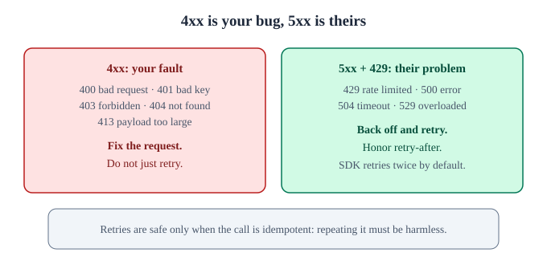
Errors and retries: the codes that matter. A 4xx code shows your error. A 5xx code shows their error. You must only retry a call if the call is idempotent. Repeating the call must not cause damage.
Errors and retries: the codes that matter. Rung 2: the codes that matter.
Code
Meaning
Your action
400
Bad request (bad parameters, spend limit reached)
Correct the request. If the code worked before, check the spend limits.
401
Bad API key
Change the key. Check the environment variable.
402
Billing issue
Add credits. Correct the payment method.
403
Forbidden
The key does not have access to the model or the feature.
404
The system does not find the item.
The model ID or the endpoint is incorrect.
409
There is a conflict.
Retry the idempotent operation.
413
The payload is too large.
The request is more than 32 MB. Decrease the context or the attachments.
429
The system limits the rate.
Obey retry-after. Reduce the rate.
500
There is an Anthropic side error.
Retry with backoff.
504
There is a gateway timeout.
Retry the request. Consider smaller requests.
529
The system is overloaded.
Retry the request with backoff. The service is saturated.
Rung 3: your responsibilities around the retry. Retries are safe only when the repeated call is harmless. Tool functions must be idempotent. A retried charge must not double-bill a customer.
Build a dead-letter path for requests that fail after retries. This is a holding area. Failed requests wait for later inspection and manual replay. Alert on 4xx spikes.
These spikes show an your bug, not an Anthropic bug. Keep these size limits in mind: 32 MB per Messages request, 256 MB per batch, 500 MB for file uploads. If you exceed these limits, the system will return 413. Chunk the data to fix this problem.
retry safe? tool is idempotent --yes--> retry freely (charge(42) twice = charged once)
no --> make it idempotent first, or don't auto-retry
Your tool charges a customer per call. A request times out and the SDK retries. What breaks?
A double charge, unless the tool function is idempotent. Retries are safe only when repeating the call is harmless.
Next: Measure the output. Then trust the output.
Eval basics: measure, then trust
Why this comes next.
Your calls work. Your retries are sane. The exam asks how you know the output is good. You must measure the output. Then you must trust the output.
Rung 1: the plainest version. Prompt engineering makes a prompt better. Evaluation tells you if the prompt is good enough. It gives a number, not a feeling.
Test the prompt like you test code. Run the prompt against known cases. Score the prompt.
prompt + test cases --> run --> score (e.g. 82% correct)
change the prompt --> run --> score (e.g. 91% correct) --> the delta is the truth
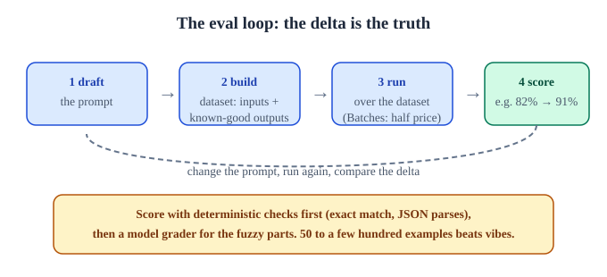
The eval loop: the delta is the truth. Do deterministic checks first. Do a model grader second. 50 to a few hundred examples are better than feelings.
Rung 2: the four-step loop. Draft the prompt. Build data: inputs with known-good outputs (50 to a few hundred examples beats vibes). Run the prompt over the dataset.
Score with a deterministic check first (exact match, JSON parses, regex). Then use a model grader for the fuzzy parts. Change the prompt and run the loop again. Manual spot-checking lies to you: you remember the wins and forget the failures.
1. DRAFT prompt
2. BUILD dataset (inputs + known-good outputs)
3. RUN over the dataset (Batches API: half price, no hurry)
4. SCORE: deterministic checks first, model grader second
|
v (loop: edit prompt, re-run, compare the delta)
Rung 3: the production setup. The Batches API is the eval workhorse: 50% off, and evals do not need low latency. The exam-ready distinction: prompt engineering edits the instruction, while evaluation measures the behavior across many inputs. Teams that skip the second one ship prompts that work on the five examples the author tried and fail on the five thousandth user.
Speed:
Watch: The AI Frontier's "Prompt Eval to Running the Eval" shows the full loop. It covers drafting a prompt, building the dataset, calling the API, and scoring results. This is prerequisite practice for the Claude Certified Architect exam. The transcript was checked in September 2026.
Your new prompt beats the old one on your 5 test cases. Ship it?
No. Five hand-picked cases prove nothing; run both over a real dataset and compare scores.
Next: Safety and guardrails: a short version.
Safety and Guardrails: Short Version
Why this comes next.
Evals measure the quality. Safety is the other half of production. This is the short version of guardrails. You will build on this information in D5.
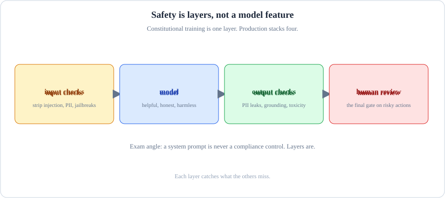
This shows safety in layers. The layers prevent, detect, and respond. No single layer carries the load.
How to read this diagram
PREVENT: Stop the bad action before it happens. Use least privilege. Use deny rules. Use input validation.
DETECT: See the event when it happens. Use hooks, PII scanners, and audit logs.
Contain the problem after it occurs. Use the kill switch. Do the key rotation. Use the runbook.
One layer fails without a warning. Three layers fail with a warning.
What breaks if a part fails: If detection is the only layer, you will know when the leak happened but cannot stop it.
Rung 1: the plainest version. Claude uses a safety-first approach. Anthropic calls this approach constitutional AI. This approach makes Claude helpful, honest, and harmless.
The API refuses some content. Model-level safety is one layer only. The exam considers safety an architecture concern. It is not a model feature.
safety = layers, not a model feature
[ input checks ] -> [ model ] -> [ output checks ] -> [ human review ]
Rung 2: the four layers.Input validation removes data that your app must not forward. This includes prompt-injection attempts in user fields, absurd payloads, and malformed tool arguments. The model gets system prompts.
These prompts state refusal and escalation rules. They also specify the correct model for the risk level. Output checks validates the structure. It checks if the data parses as JSON.
It scans for disallowed content. It routes high-stakes outputs to human review before they reach the user. High-stakes outputs include refunds, medical information, and legal information. Audit trail logs prompts, tool calls, and outputs. This helps you replay the exact sequence of events.
user input --> [1. validate: injections, size, shape]
--> [2. model: refusal rules in system prompt]
--> [3. check output: parse, scan, escalate if high-stakes]
--> [4. log everything: replayable audit trail]
--> user
Rung 3: the mindset. Do not trust a single layer. The model is one guardrail. Your architecture has the other guardrails.
one layer fails --> breach. layered: one fails, the next catches it.
[input] [model] [output] [human] [audit]: remove any ONE, still defended
Name two safety layers that live outside the model.
Any two of: input validation, output checks, human review for high-stakes outputs, audit logging.
Next: This is the short version of safety and guardrails. These are the five moves for prompt engineering fundamentals.
Prompt engineering fundamentals: the five moves
Why this comes next.
The mechanics, the models, the measurement, and the safety are all in place. This chapter explains prompting. It shows five moves. You can apply these moves anywhere.
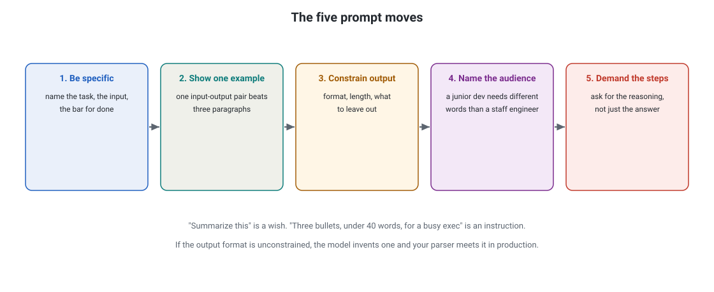
The five prompt moves: be specific, show one example, constrain the output, name the audience, and demand the steps.
How to read this diagram
Move 1: name the task, the input, and the bar for done.
Move 2: one input-output pair beats three paragraphs of description.
Move 3: set the format, the length, and what to leave out.
Move 4: a junior dev needs different words than a staff engineer.
Move 5: ask for the reasoning, not just the answer.
What breaks if a part fails: If the output format is unconstrained, the model invents one, and your parser meets it in production.
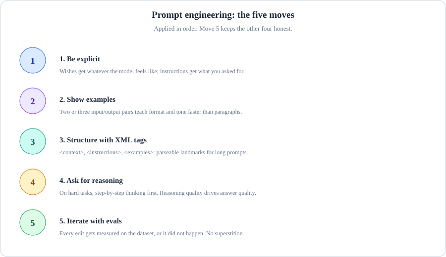
The five prompt moves are: be specific, show one example, constrain the output, name the audience, and demand the steps.
How to read this diagram
Name the task. Name the input. Name the bar for done.
Show one example. One input-output pair is better than three paragraphs of description.
Constrain the output format. Constrain the output length. Constrain the output content.
Identify the audience. A junior developer needs different words than a staff engineer.
Ask for the reasoning. Do not ask for only the answer.
What breaks if a part fails: If the output format is not constrained, the model invents a format. Your parser will meet this format in production.
Rung 1: the plainest version. To write better prompts, be explicit. "Summarize this" is a wish. "Three bullets, under 40 words, for a busy executive" is an instruction. Wishes get what the model provides. Instructions get what you ask for.
wish: "Summarize this" --> unpredictable
instruction: "Three bullets, under 40 words, for a busy exec" --> what you asked for
Rung 2: show and structure. Move two: show examples. Two or three input-output pairs (few-shot) teach format and tone faster than paragraphs of description. Move three: structure with XML tags. Wrap sections in , , and so Claude gets parseable landmarks, especially in long prompts.
<context> the background Claude needs </context>
<instructions> exactly what to do </instructions>
<examples> 2-3 input/output pairs showing the format </examples>
Rung 3: reason, then measure. Move four: ask for reasoning on hard tasks. Tell the system to think step by step. You can also enable the thinking mode.
The reasoning quality controls the answer quality. Move five: iterate with evals. Measure every edit on the dataset. If an edit is not measured, it did not happen.
The failure mode is prompt superstition. Prompt superstition is when people add phrases because they heard the phrases help. There is no measurement for these phrases. If an edit does not change your evaluation score, delete the edit.
Shorter prompts are cheaper. Shorter prompts are faster. Shorter prompts are easier to cache.
edit prompt --> run eval --> score moved? --yes--> keep it
no --> delete it (superstition)
A teammate adds three paragraphs of motivational fluff to the system prompt. Eval score unchanged. Keep it?
No. Unmeasured prompt weight costs tokens every call and breaks nothing by leaving. Delete it.
Prompt engineering fundamentals: the five moves. Next: This is the Capstone. It is one production application. You build the application rung by rung.
Prompt engineering fundamentals: the five moves. Capstone: one production application, built rung by rung
Why this comes next.
Capstone: one production application, built rung by rung. Every piece is available. The capstone connects the pieces into one production application. You build it rung by rung. The exam expects you to think this way.
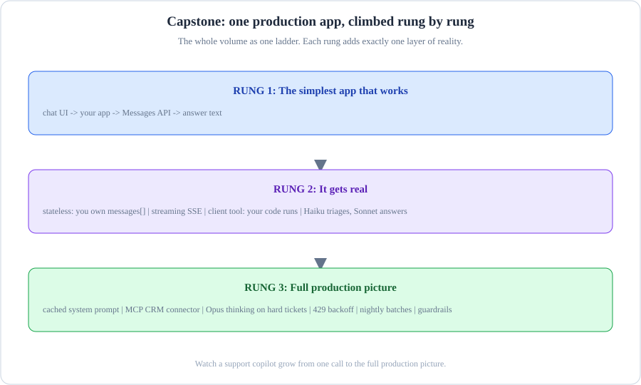
The capstone ladder: five rungs from a working call to a deployed system.
How to read this diagram
Rung 1 is a working API call. Rung 2 is a multi-turn conversation with memory.
Rung 3 is for the tools that the model can call. Rung 4 is for the evals that prove the model works.
Capstone: one production application, built rung by rung. Rung 5: a deployed system with monitoring. Each rung uses the rung below it.
Capstone: one production application, built rung by rung. What breaks if a part fails: If you skip rung 4, rung 5 is a deployment of hope.
Capstone: one production application, built rung by rung. You now know every piece. Watch a support copilot grow. It goes from the simplest version to the full production picture. This is the complete volume as one ladder.
Capstone: one production application, built rung by rung. Rung 1: the simplest app that works. Make one call. Get one answer.
A user asks a question. You send the system and the message. Claude replies.
[chat UI] --> your app --> Messages API --> answer text --> [chat UI]
system: "You are a support agent."
Capstone: one production application, built rung by rung. Rung 2: it gets real. The API is stateless. Your application owns the messages array across turns.
Answers stream so users see words immediately. A client tool lets Claude find orders. Haiku sorts the requests. Sonnet gives the answers.
[chat UI] ==streams==> your app --owns messages[]--> Messages API
+-- get_order_status (client tool: your code runs it)
+-- Haiku triages, Sonnet answers
Rung 3: the full production picture. This architecture includes seventeen of the twenty-one units in this volume.
SUPPORT COPILOT (production)
============================
[Customer chat UI]
| streams tokens live (SSE) so replies feel instant
v
[Your app server] ---- owns the messages[] array (API is stateless)
|
+-- system prompt: cached 5m breakpoint (stable contract, 0.10x reads)
+-- tools: get_order_status, search_kb (client tools: YOUR code runs)
+-- MCP connector: CRM server (server tool: Anthropic runs)
+-- thinking: adaptive on Opus 5.5 (hard tickets only)
+-- model routing: Haiku classifies, Sonnet answers, Opus escalates
|
v
[Messages API] --stop_reason--> tool_use? loop (MAX_TURNS=20) : end_turn? answer
|
+-- 429 with retry-after -> backoff + retry (SDK does 2x automatically)
+-- 429 without it -> tier cap: page on-call, do not retry
+-- usage logged per turn: input_tokens, cache_read_input_tokens, model
|
[Nightly] Batches API: 500 labeled tickets, 50% off, score vs baseline
|
[Guardrails] input validation -> model -> output checks -> human review (refunds)
How to read this diagram
Request arrives. The chat UI opens a streaming call. The customer sees words immediately.
The app assembles the request. Cached system prompt first (stable prefix), then the conversation history, then the new message. Tool definitions travel as input tokens.
Routing picks the model. Haiku triages the ticket with one low-cost call. Routine questions stay on Sonnet. If the ticket involves money or angry enterprise accounts, it escalates to Opus 5.5. Opus 5.5 uses adaptive thinking.
The tool loop runs. Claude asks for get_order_status. Your code runs the tool and returns the tool_result with the matching ID. The CRM lookup uses the MCP connector. This needs configuration only, not custom code. The loop repeats until stop_reason is end_turn. The loop has a maximum of 20 turns.
The answer streams back. Thinking summaries show for escalations. The raw scratchpad never reaches the user.
Handle failures. Do not hope them away. Rate-limit 429s back off automatically. Tier-cap 429s alert a human. Tool functions are idempotent. Therefore, retries do not double-charge. Every turn logs token usage and cache hits.
Nightly, the batch eval runs. Five hundred labeled tickets go through the Batches API at half price. If the score drops, the system reverts the prompt change that caused the drop. Nothing ships on vibes.
Guardrails wrap everything. Injection attempts stop at input validation. Refund decisions queue for human review. The full audit trail replays any incident from start to end.
Count the units in that diagram. There are tokens, keys, messages, system, multi-turn, sampling (defaults), tool use, thinking, caching, batches, models, MCP, streaming, rate limits, errors, evals, and safety. Seventeen of the twenty-one units are in one app. The four units that you do not see are embeddings, Claude Code, prompt engineering, and this capstone.
Embeddings feed the knowledge base that the tools search. Claude Code built the app. Prompt engineering wrote the prompts that the evals grade.
If you can trace a request through that diagram and name the unit behind every arrow, you close the Claude half of your prerequisite gap. The main track will now ask you to design systems like this one under exam constraints. These constraints include cost ceilings, latency budgets, and compliance rules. You have the vocabulary. Go build.
Next: This is D1 (Solution Design and Architecture) in 01-solution-design-architecture.html. This is where this vocabulary meets exam scenarios.
Where to go next.
[Capstone: one production app, climbed rung by rung] You complete the prerequisite. You have the full Claude vocabulary. This includes API keys and evaluations. The exam track starts with D1 (Solution Design and Architecture) in 01-solution-design-architecture.html.
[Capstone: one production app, climbed rung by rung] If you have little time, the crash course compresses all seven domains. The question bank tests the domains.


![Agentic tool-use loop: user task feeds messages to Claude, which emits tool_use blocks when stop_reason is tool_use; your executor runs the tool and appends tool_result to messages, looping until stop_reason is end_turn; a MAX_TURNS guard prevents runaway billing]( "The client-tool loop. Claude asks, your code executes, results feed back into messages. The MAX_TURNS guard is not optional in production.")
![The six-step agentic loop: receive task, plan, choose tool, pass the permission gate (allow, ask, deny), execute, observe, decide; loops back with more context until done]( "The same loop as Claude Code runs it: plan, choose, permission gate, execute, observe, decide.")
![Prompt caching as prefix matching: the original prompt holds segments A, B, C, a cache checkpoint, then D; the cached prefix A-B-C is reused on later requests; a cache hit happens when the request starts with A-B-C, a miss when the prefix is altered or reordered]( "Prefix matching is the whole mechanic: identical start, cache hit. Any change in the prefix, miss.")
![MCP client-server architecture: a host contains MCP clients, each speaking the MCP protocol to its own MCP server]( "Host, client, server. The host holds one client per server; each pair speaks the MCP protocol.")